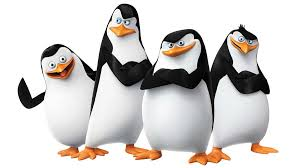
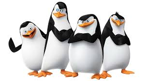
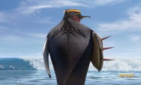
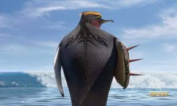
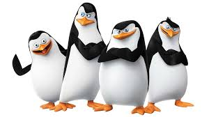
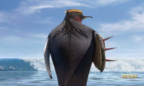

Inspired by Antarctica
 


 

Welcome to the south pole explorers, glad you could make it! Enjoy the tour as we'll cover some of antarctica's finest bird-life
These little guys are adelie penguins. They are one of the most common species as they inhabit the whole continet of Antarctica. They get no taller than 28 inches making them a predator to no one other than the shrimp or krill that their diet consists of.
Believe it or not, the Adelie penguin was the inspiration for the Penguins of Madagascar: Skipper, Kowalski, Rico, and Private.
The emperor penguins are the biggest living penguin known to mankind. They can grow almost four feet tall and weigh up to 100lbs. Emperors are built different as they generally breed in Antarctic inlands where temperatures get as low as -40 degrees Farenheit!
Emperor Penguins are the inspiration behind characters like Big Z, and Tank the Shredder Evans from Surfs Up.
The chinstrap penguins are another very common breed of penguin. These little fellas cover all of Antarctica as well as Argentina, Chile, and other southern islands.
There unfortunately aren't any famous animated penguins based off the chinstrap penguin yet. However, they could potentially be the inspiration for Lebron's chinstrap beard... We just don't know.

